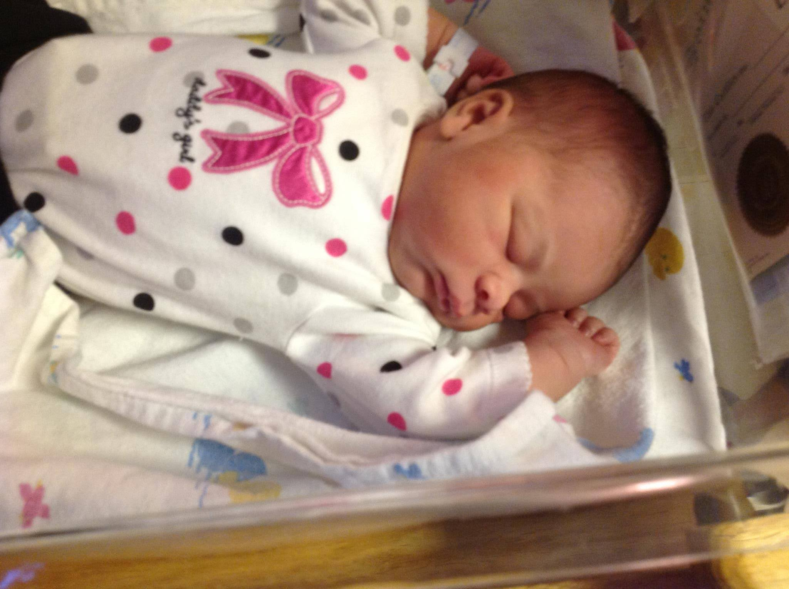
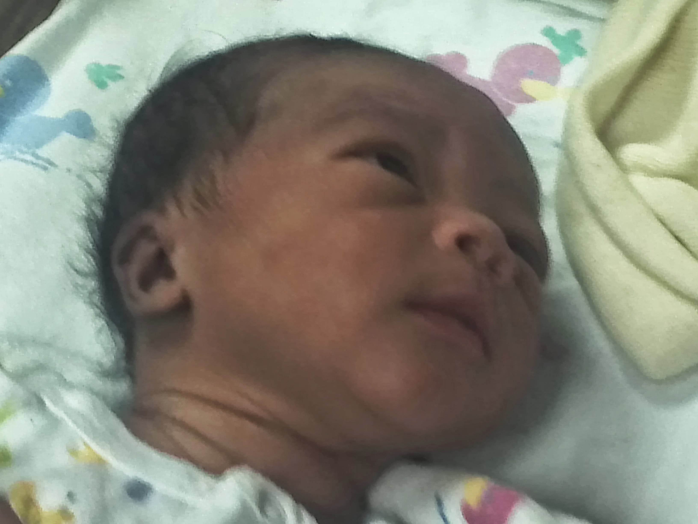
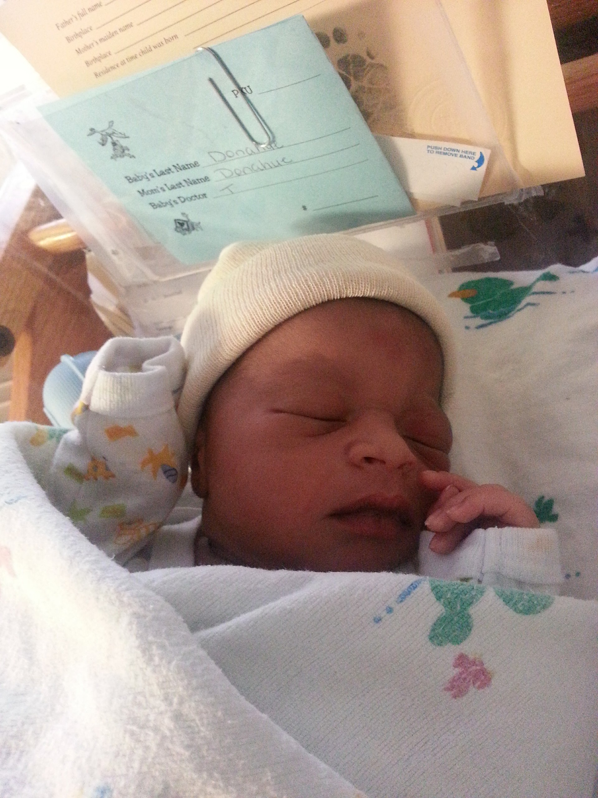

The Paradox of Grandchildren
...But they're my babies...How can they be having babies?!!
I will never forget the day. It was a Friday. I know because every Friday, when I get home from a long, hard work day, picking up the kids, running what seemed like endless errands with thousands of other people who were running their errands too, but seemed to always be in my way...whenever I finally made it home, I did the same exact thing every Friday. I put everything that I'd lugged into the house away. Changed into sweats. Poured a glass of wine. Turned on some music, and turned it up LOUD. And cleaned my house.
And that was just what I was doing...cleaning. And my kids would follow suit. I didn't have to tell them to clean their rooms. My oldest daughter was 19, in her first year of college. My youngest daughter was 15, a sophomore in high school. And my baby, my only son, was only 8, but even he knew the Friday night routine. When they heard the music pumping, they knew the deal. So I assume they were all cleaning their rooms.
I had just mopped my bathroom floor, and was just about to start putting up some laundry I had folded earlier that week. Then I saw my girls coming up the stairs to my room.
"We have something to tell you Mama", my oldest looked like something was wrong. "Ok...what is it?"
That's when the youngest girl told me.
"Leave me!" was all I could manage before the tears started to flow.
But that wasn't all they had to tell me. The next morning when I awakened, both girls were sitting on my bed. That's when my oldest girl told me that she was pregnant too.
Nine Months later...

Malaya Lynn Erecius, my first grandchild
Nine Months and four days later...

E'Monte James Dedner, my first grandson
So, life goes on, but the struggle was REAL! I accepted that I was now a GG. Yes, a GG. Not a granny, not a grandma...I was much too young and fine for those titles. So, I decided to be a GG.
I continued working, my oldest daughter continued college, my youngest daughter continued high school, and my son continued elementary school. We were all in it together, with two babies to care for.
Diaper changes, middle of the night feedings, baby daddy visits all the damn time, helping with homework, cooking, cleaning, working, errands...all while being severely sleep deprived. But the joy those little faces, fingers, and toes brought...indescribable!
Eventually, my oldest daughter got a part time job, and decided to move out. She and her son's dad moved in together. Shortly thereafter, she got pregnant again.
And again, I'm sure my ambivalence was palpable. But they were both working, my daughter was still in school, and they seemed to be building a life together. Who was I to tell them what to do?
And then this happened...

Antonio Dedner, my second grandson
Another little bundle of joy was born. The more, the merrier I guess.
My youngest daughter graduated high school, and went to live in the dorms at a local university. I kept my oldest granddaughter. I wanted my daughter to have a fighting chance.
But she didn't...she couldn't. She could not bear being away from her daughter. She couldn't focus on college classes. She promptly flunked out, moved back home, and got a job.
Eventually, she and her daughter's dad decided to move in together. And true to form, shortly thereafter, she was pregnant again too.
And then this happened...again
Londyn Rai Erecius, my second granddaughter
So now I have a whole crew! Two granddaugters (Malaya and Londyn) and two grandsons (E'Monte and Antonio). I'm blessed because not one week goes by without seeing and spending time with my wonderful
grandchildren. They make me laugh, they challenge my stamina, the wear me out, and they overall generally fill my heart with joy. I wasn't thrilled at the news that I was going to be a grandmother,
but it has all worked out just wonderfully. I thank God for my family daily.
For another point of view on becoming a grandparent, read the following article
"Spirituality: The Focus of God's Love and My New Granddaughter"